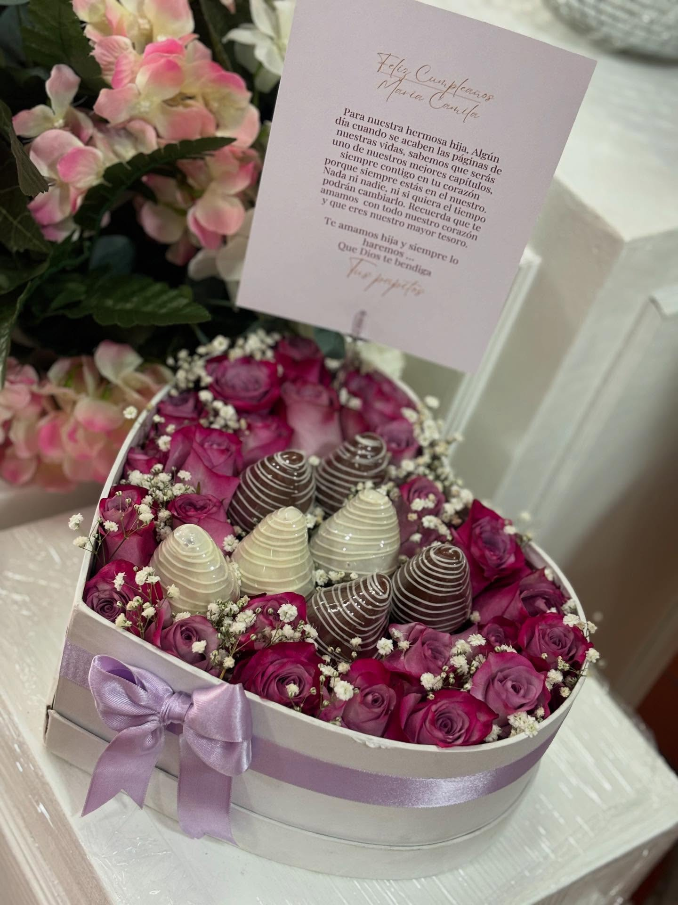

Creatividad
Ramos personalizados
Lo que me apasiona hacer
Mi hobby es crear arreglos que transmiten emociones. Desde pequeña me ha gustado combinar colores y flores para cumpleaños y eventos familiares en Bucaramanga.

Ramos personalizados
Cada flor cuenta
Domicilios con dedicatoria